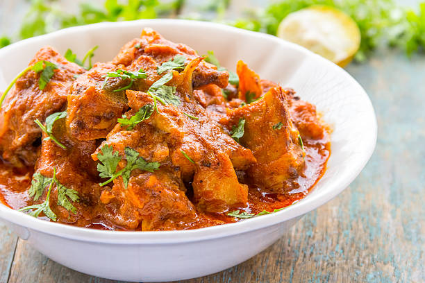

Chicken Tikka Masala

Description
Chicken Tikka Masala is a rich and creamy Indian dish featuring marinated grilled chicken chunks simmered in a spiced tomato-based sauce. It’s beloved for its deep flavor, aromatic spices, and comforting nature, best served with rice or naan bread.
This dish strikes a perfect balance of smoky, spicy, and tangy flavors.
Ingredients
- 1 pound boneless chicken thighs, cubed
- 1 cup plain yogurt
- 2 tablespoons lemon juice
- 1 tablespoon garam masala
- 1 teaspoon turmeric
- 1 teaspoon ground cumin
- 1 teaspoon paprika
- 2 tablespoons oil
- 1 onion, finely chopped
- 2 cloves garlic, minced
- 1 tablespoon grated ginger
- 1 (15 oz) can tomato sauce
- 1 cup heavy cream
- Salt to taste
- Fresh cilantro for garnish
Steps
- In a bowl, mix yogurt, lemon juice, and half the spices. Marinate chicken in mixture for at least 1 hour.
- Grill or sauté chicken pieces until lightly charred and cooked through. Set aside.
- In a pan, heat oil and sauté onions until soft. Add garlic, ginger, and remaining spices.
- Stir in tomato sauce and simmer for 10 minutes.
- Add cream and simmer for another 5 minutes.
- Add grilled chicken pieces to the sauce and cook for 10 minutes.
- Serve hot with rice or naan. Garnish with chopped cilantro.
Home